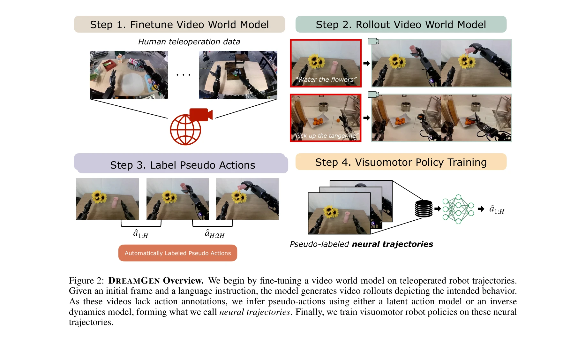
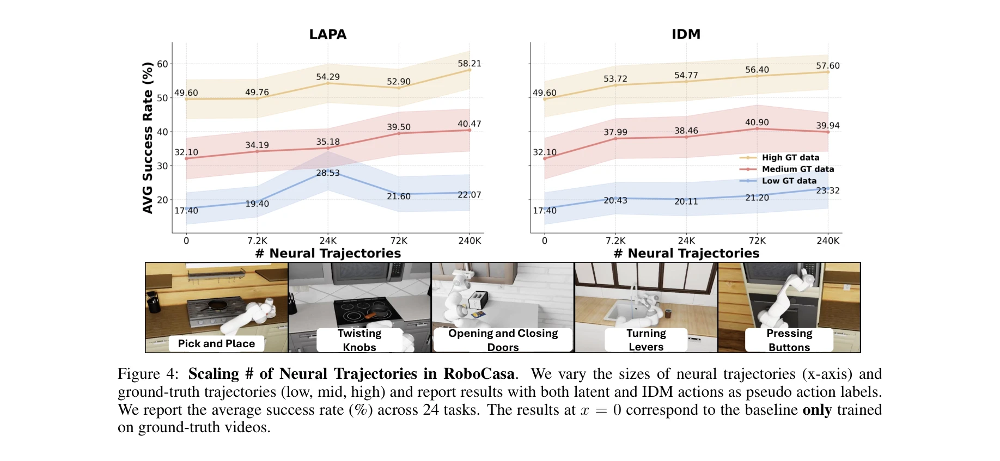
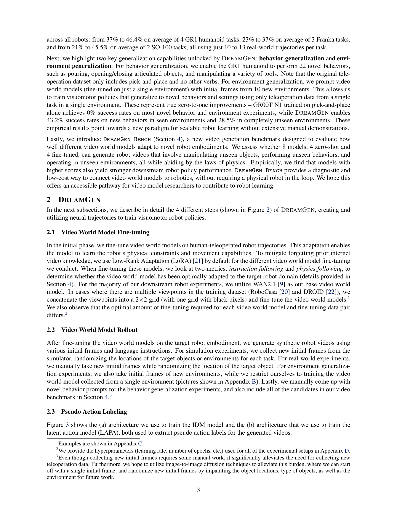

저자: Joel Jang, Seonghyeon Ye, Zongyu Lin, Jiannan Xiang, Johan Bjorck, Yu Fang, Fengyuan Hu, Spencer Huang, Kaushil Kundalia, Yen-Chen Lin, Loic Magne, Ajay Mandlekar, Avnish Narayan, You Liang Tan, Guanzhi Wang, Jing Wang, Qi Wang, Yinzhen Xu, Xiaohui Zeng, Kaiyuan Zheng, Ruijie Zheng, Ming-Yu Liu, Luke Zettlemoyer, Dieter Fox, Jan Kautz, Scott Reed, Yuke Zhu, Linxi Fan | 날짜: 2025-05-19 | URL: https://arxiv.org/abs/2505.12705

Figure 2: DREAMGEN Overview. We begin by fine-tuning a video world model on teleoperated robot trajectories.
DreamGen은 비디오 월드 모델(video world model)을 활용하여 최소한의 원격조종 데이터로부터 로봇 정책을 학습하는 4단계 파이프라인으로, 신규 행동과 환경에 대한 일반화를 달성한다.

Figure 4: Scaling # of Neural Trajectories in RoboCasa. We vary the sizes of neural trajectories (x-axis) and

Figure 3 shows the (a) architecture we use to train the IDM model and the (b) architecture that we use to train the
총평: DreamGen은 비디오 월드 모델을 로봇 학습의 효율적인 데이터 생성 도구로 재정의하여, 최소한의 원격조종 데이터로 다양한 행동과 환경 일반화를 달성하는 혁신적이고 실용적인 접근법을 제시한다. 다중 embodiment 실세계 검증과 DreamGen Bench라는 체계적 평가 도구까지 제공하여 로봇 학습 확장의 새로운 방향을 제시한다.